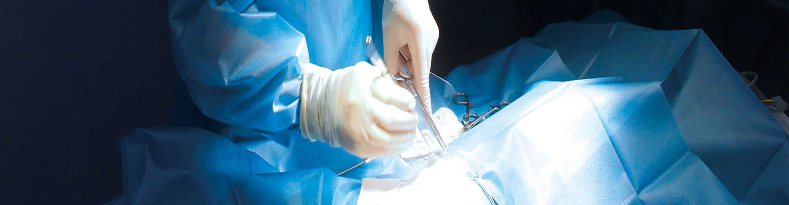
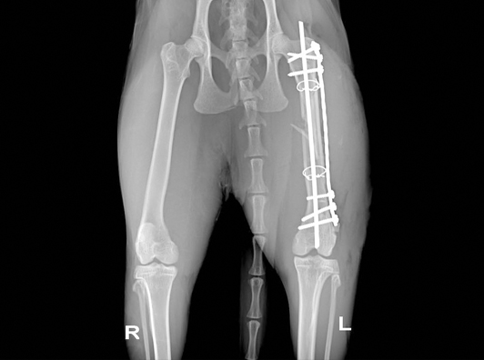
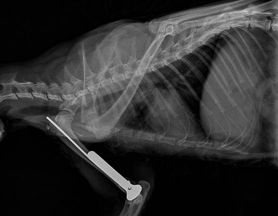

医疗服务
Medical Service
凭借阵容强大的专家团队、媲美港台的医疗设备、遵循规范、严谨的作业流程，
每年为几十万只宠物提供高品质的服务。范围涵盖：宠物医疗保健、美容造型、寄养、洗浴、SPA、食品及用品等。临床经验丰富的
宠物医师，其中硕士35人、博士2人，执业兽医师328人。
专家案例
娴熟的技术，先进的医疗器械。

股骨粉碎性骨折
1.基础信息 家猫，年龄1岁，体重2.2kg，雄性，未绝育，从五楼坠落后无法站立和行走，主人带往我医院进行就诊。
2. 临床检查 患猫精神状态萎靡，口色苍白，T：38.3℃，P：86次/分，R：32次/分，呼吸急促，卧地不起，右前肢及双后肢解剖姿势异常，轻微牵引疼痛感明显，可闻及明显骨摩擦音。
3.辅助检查 血液学检查结果：血常规见轻度贫血及炎性血像、生化检查提示肝损伤、血气检查结果未见明显异常。
4. 初步诊断 综合以上各项检查，初步诊断为右肱骨远端粉碎性骨折合并双侧腓骨远端骨折、双侧距骨粉碎性骨折。
5. 治疗 本病例胸腹部X线片检查未见明显异常，但鉴于患猫体况较差，术前3天给予输液预防继发感染、增加营养等，待患猫体况好转后，实施内固定手术。 丙泊酚诱导麻醉、异氟烷维持麻醉后，患肢备皮消毒。
